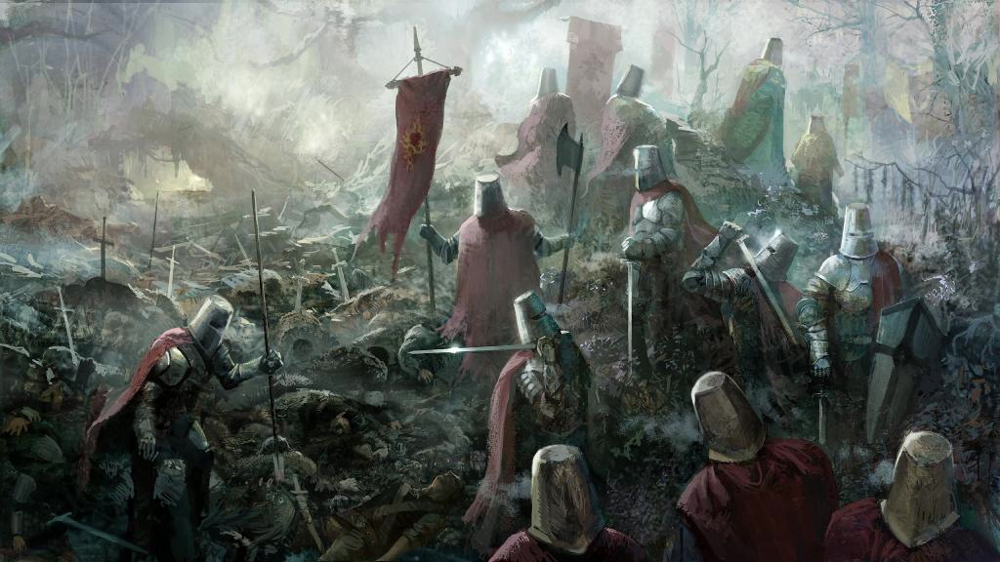
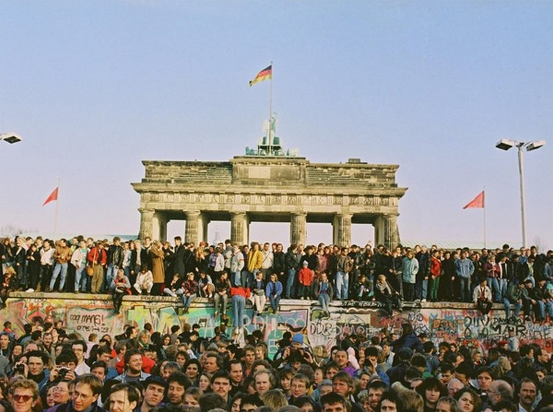

- XVI век
- Эразм Роттердамский. Похвала глупости
- XVIII век
- Фридрих Шиллер. Разбойники
- Фридрих Шиллер. Коварство и любовь
- Иоганн Вольфганг Гёте. Фауст
- XX век
- Томас Манн. Будденброки
- Томас Манн. Волшебная гора
- Эрих Мария Ремарк. На Западном фронте без перемен
- Эрих Мария Ремарк. Возвращение
- Эрих Мария Ремарк. Возлюби ближнего своего
- Эрих Мария Ремарк. Искра жизни
- Эрих Мария Ремарк. Время жить и время умирать
- Эрих Мария Ремарк. Чёрный обелиск
- Эрих Мария Ремарк. Ночь в Лиссабоне
- Ханс Фаллада. Один в Берлине
- Ханс Фаллада. Кошмар в Берлине
- Генрих Бёлль. Групповой портрет с дамой
- Гюнтер Грасс. Жестяной барабан
- XXI век
- Даниэль Шпек. Bella Германия
Вы хотите посмотреть другие подборки?
Да